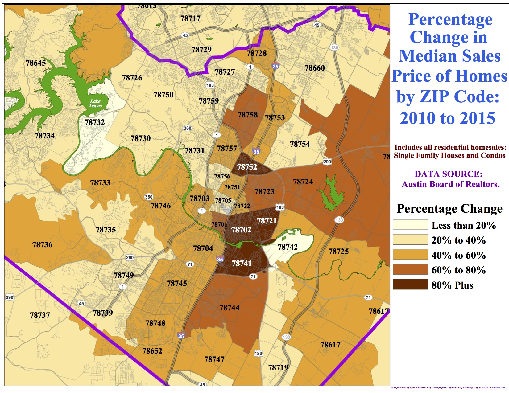

ATX Hack for Change
Joanne Bruno, Jeremy Cantu, Kaitlyn Clark, Jim Given, Jess Sauer
Austin's housing problem(s)

Mayor's Task Force on Institutional Racism and Systemic Inequities
"Austin must take aggressive steps to ensure housing for all its residents, not only those newly
arriving, but also the longtime residents."
What We've Done
- Mobile-first responsive web app
- Database of local assistance programs with metadata
- Back-end matching logic
- WCAG compliant front end
Getting to MVP
- Connecting front and back ends
- Translation of content into Spanish
- Development of eviction user flow
Vision for the Future
- Creating Facebook Messenger chatbot (see Do Not Pay)
- Compiling personalized letters for users
- Making app customizable for other cities